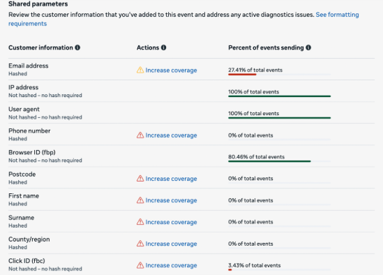
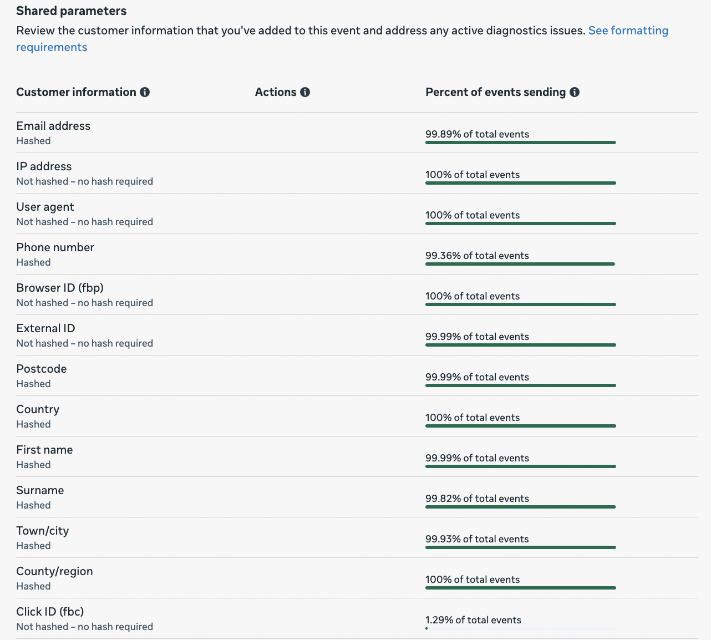

Project
Pet Circle - Meta CAPI & Server-Side GTM


The Challenge: The existing Meta Pixel setup was basic, missing 8 of 9 critical Advanced Matching parameters. This, combined with inconsistent data capture (due to SPA timing issues), led to very poor Event Match Quality (EMQ) scores (avg. 4.78/10), failed event deduplication, and data pollution from non-standard events.
The Solution: A robust, privacy-first system was built in GTM to find and send all required user data from any page.
- 9 Universal GTM Variables: Created separate Custom JavaScript variables for all 9 user parameters (Email, Name, Phone, Address, etc.).
- Priority-Based Extraction: Each variable "smartly" checks multiple page sources (e.g., checkout data, profile greetings, form inputs) in a priority order.
- On-the-Fly Hashing: All PII was SHA256 hashed *inside* GTM before transmission to ensure privacy compliance.
- Managed Triggers: Solved SPA timing issues by moving the GA4 Config trigger to "DOM Ready," ensuring it fired *after* the site's `customer_identified` dataLayer push, capturing all user data reliably.

Key Results:
- EMQ Score: Increased from 4.78/10 to an average of 9.2/10 for critical events (Purchase: 9.3).
- Parameter Coverage: Increased from 5 to 13 parameters sent with key events.
- Event Deduplication: Fixed from 50% failure to 100% meets best practice.
- Event Cleanup: Simplified 17 production events down to 6 core e-commerce events.
Vertical Institute Performance Marketing Achievement


As Senior Performance Marketing and later Performance Marketing Manager at Vertical Institute, I led strategic marketing initiatives that delivered exceptional results across multiple platforms:
- Managed and optimized a 1 Million SGD advertising budget across Google, Meta, and other platforms
- Achieved consistent growth in leads and sales while maintaining efficient spending
- Implemented data-driven strategies that resulted in a 62% reduction in cost per sale
- Drove a 43% increase in average monthly sales through optimized multi-channel campaigns
- Continuously monitored key performance metrics including Cost Per Sale (CPS) to ensure maximum ROI
- Developed comprehensive performance dashboards for real-time campaign analysis and optimization
- Conducted platform-specific optimizations to leverage the unique strengths of Google and Meta advertising
The performance charts above demonstrate the effectiveness of our marketing strategies, showing the relationship between spending, leads generated, and sales achieved across a 15-month period. The data reveals consistent improvement in marketing efficiency and steady growth in both leads and sales volume.
Billstone Revenue Growth Achievement

During my tenure as Digital Marketing Specialist at Billstone, I implemented strategic marketing initiatives that drove significant revenue growth across both domestic and international markets:
- Generated over 23.3 billion IDR in domestic revenue with 76.1% growth
- Achieved 1.06 million USD in international revenue with 101.2% growth
- Drove exceptional new order revenue growth of 90.6% domestically and 14.8% internationally
- Built customer loyalty resulting in 54.1% domestic and 57.1% international repeat order revenue growth
- Expanded into new markets with strategic targeting, achieving over 1,545% growth in uncategorized revenue streams
- Implemented multi-channel marketing strategies across e-commerce platforms (Tokopedia, Shopee, Amazon) and social media
- Optimized advertising campaigns to achieve up to 20x return on ad spend (ROAS)
The revenue charts above illustrate the consistent growth in both domestic (IDR) and international (USD) markets over an 18-month period. The data demonstrates successful market penetration strategies and the effectiveness of our multi-channel approach in the luxury retail sector.
- I. Create and execute digital marketing plans
- II. Social media management for KOL TikTok and Instagram
- III. Analyzing marketing data
- IV. Mentoring Reseller (Consulting, micro marketing planning, and personal branding)
- V. Talent for content purposes
- VI. Collaborate with Creative Division for Branding
- VII. A/B Multivariate testing ad variations to determine the best performance
- VII. Regular monitoring of results and advertising improvements
- IX. Managing strategy and setup of all Ad Campaigns
- X. Reporting on the results of marketing costs that have been running in daily, weekly and monthly formats
- XI. Presenting of performance results for the current month
- I. Get the data.
- II. Explore and prepare the data for modeling.
- III. Train the model.
- IV. Evaluate model performance.
- I. Doing research on the product to be advertised
- II. Calculate product margins
- III. Create photo and video content to be advertised
- IV. Create Landing Page with Wordpress
- V. Create an advertising strategy on Facebook and Instagram Ads
- VI. Create Daily, Weekly, and Monthly Reports
- VII. Monitoring of running advertisements in order to remain optimal
- VII. Scale out and Scale up winning product
- IX. Ensuring the store remains profitable
- X. Reach minimum Leads daily
- XI. Running Ad optimization.
- I. Doing research on the product to be advertised
- II. Calculate product margins
- III. Create photo and video content to be advertised
- IV. Create Landing Page with Wordpress
- V. Create an advertising strategy on Facebook and Instagram Ads
- VI. Create Daily, Weekly, and Monthly Reports
- VII. Monitoring of running advertisements in order to remain optimal
- VII. Scale out and Scale up winning product
- IX. Ensuring the store remains profitable
- X. Reach minimum Leads daily
- XI. Running Ad optimization.
- I. Doing research on the product to be advertised
- II. Calculate product margins
- III. Create photo and video content to be advertised
- IV. Create Landing Page with Wordpress
- V. Create an advertising strategy on Facebook and Instagram Ads
- VI. Create Daily, Weekly, and Monthly Reports
- VII. Monitoring of running advertisements in order to remain optimal
- VII. Scale out and Scale up winning product
- IX. Ensuring the store remains profitable
- X. Reach minimum Leads daily
- XI. Running Ad optimization.
- I. Doing research on the product to be advertised
- II. Calculate product margins
- III. Create photo and video content to be advertised
- IV. Create Landing Page with Wordpress
- V. Create an advertising strategy on Facebook and Instagram Ads
- VI. Create Daily, Weekly, and Monthly Reports
- VII. Monitoring of running advertisements in order to remain optimal
- VII. Scale out and Scale up winning product
- IX. Ensuring the store remains profitable
- X. Reach minimum Leads daily
- XI. Running Ad optimization.